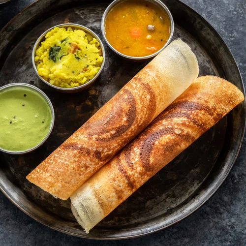

Home
Dosa Recipe

Dosa is a popular South Indian dish that is made from fermented rice and urad dal (black gram) batter. It is a thin and crispy crepe that is typically served with sambar (a lentil-based vegetable stew) and coconut chutney.
Dosa Ingredients:
- Rice
- Urad dal (black gram)
- Fenugreek seeds
- Salt
- Water
Instructions:
- Rinse the rice and urad dal separately and soak them in water for at least 4 hours or overnight.
- Drain the water and grind the rice and urad dal together with fenugreek seeds to form a smooth batter. Add water as needed to achieve the right consistency.
- Allow the batter to ferment in a warm place for 8-12 hours or until it has doubled in size.
- Add salt to the fermented batter and mix well.
- Heat a non-stick pan or griddle over medium heat. Pour a ladleful of batter onto the pan and spread it in a circular motion to form a thin crepe.
- Cook until the edges start to lift and the bottom turns golden brown. Flip the dosa and cook for another minute until both sides are crispy.
- Serve the dosa hot with sambar and coconut chutney on the side. Enjoy!